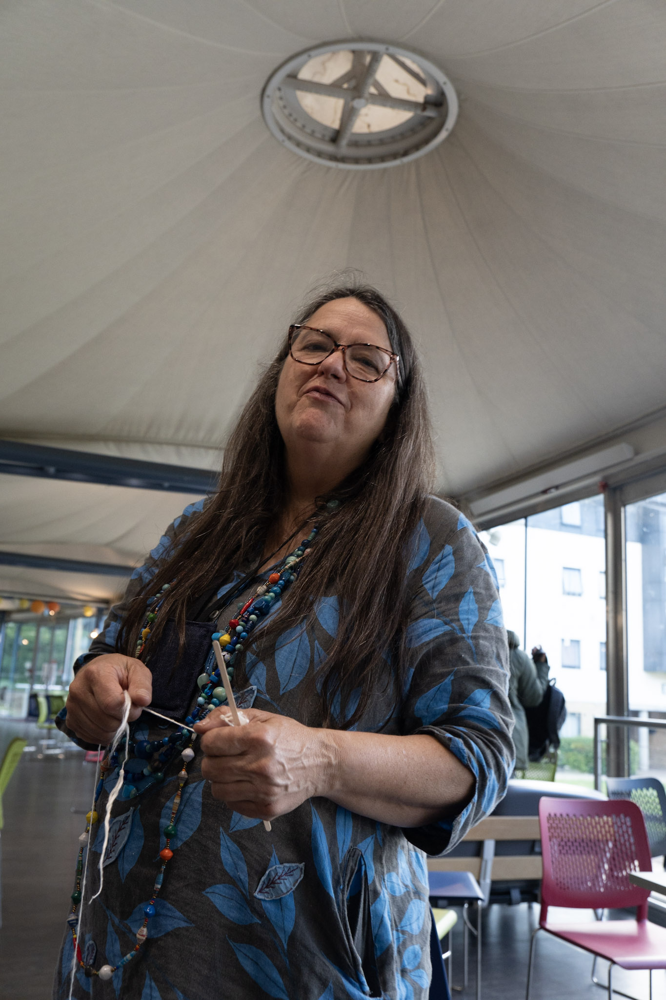
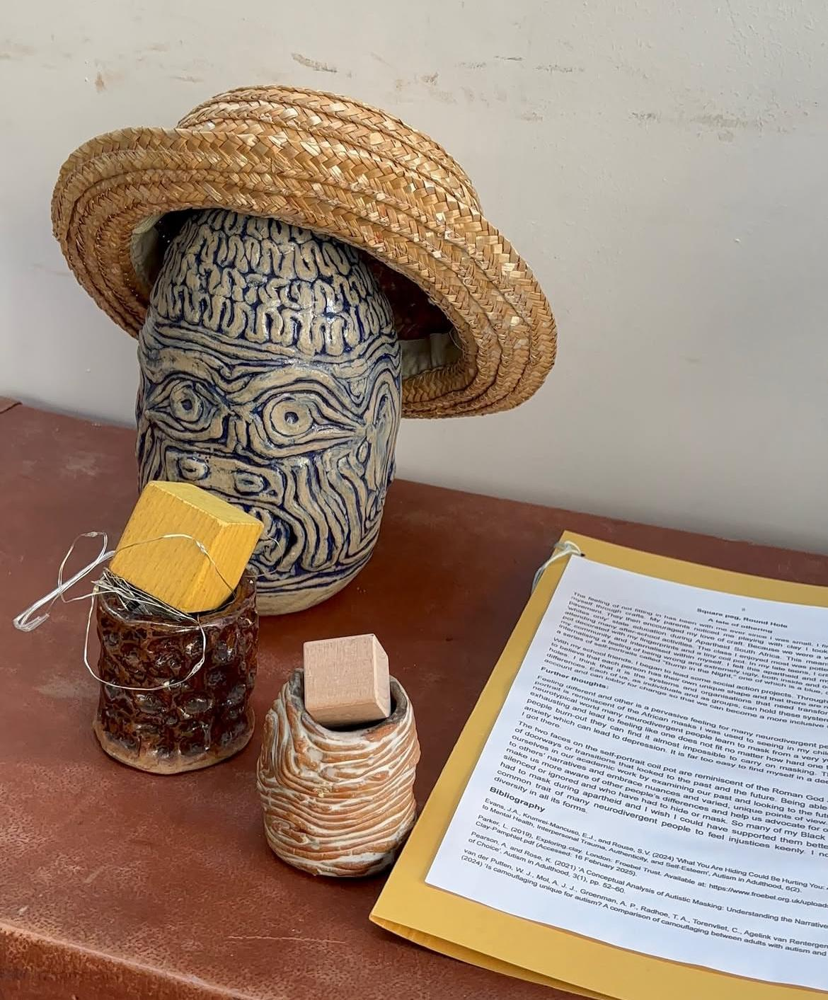
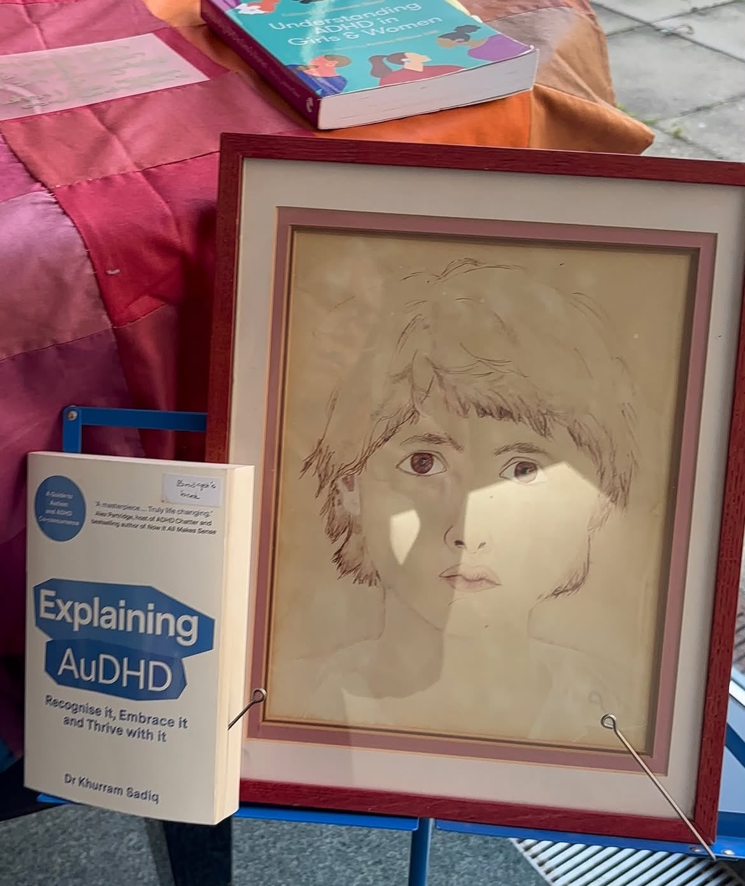
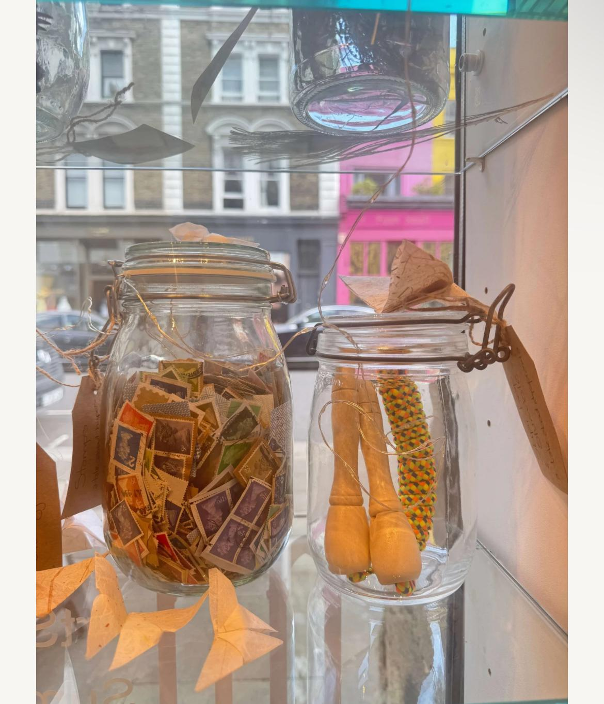
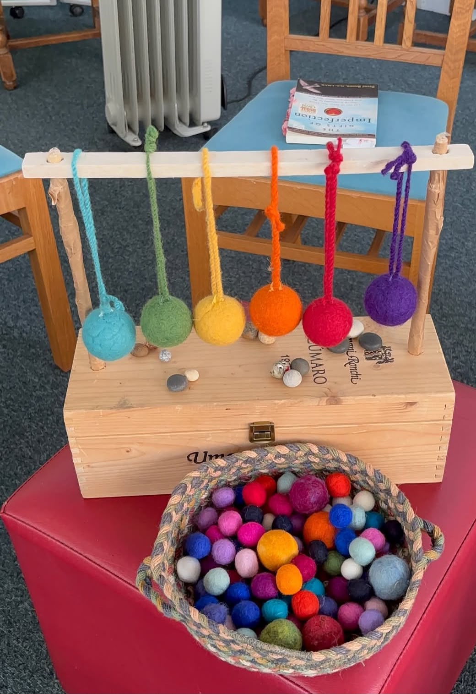
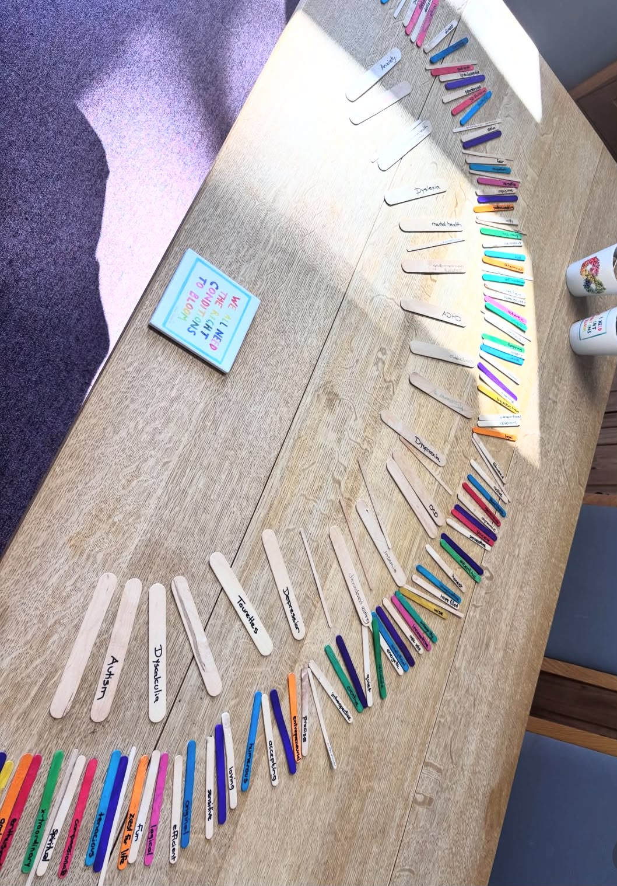
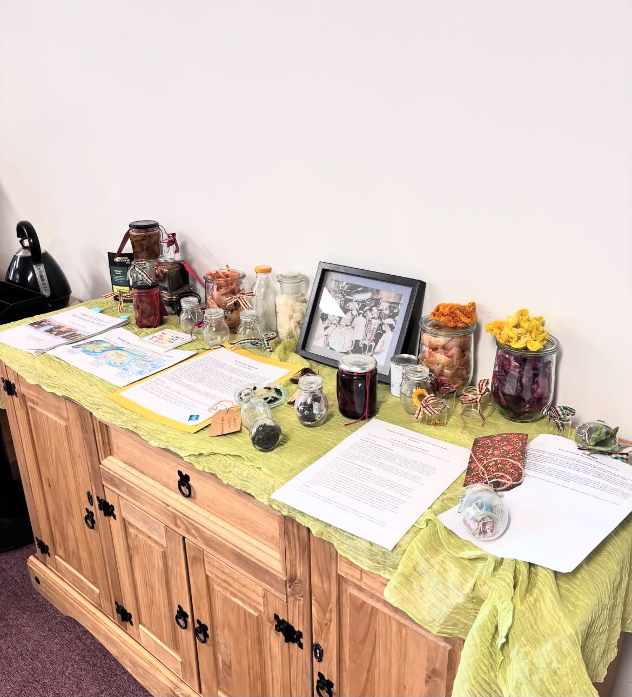
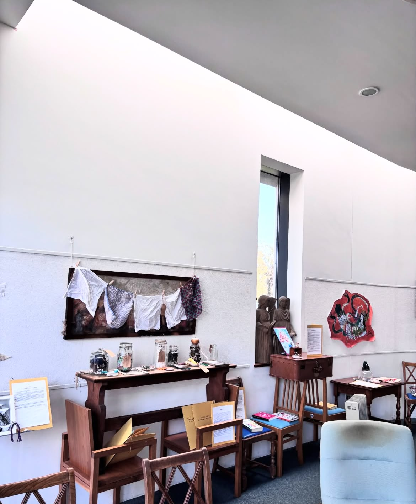

London, UK
Slow stories,
carefully kept.
Bridget Steenkamp is a neurodivergent artist, researcher and author working between museum storytelling and hands-on making, through EcoHistories and the Slow Workshops.

Profile
Meet me...Bridget Moira Steenkamp is a UK-based multidisciplinary neurodivergent artist, art tutor, children's chaplain, researcher and sole trader whose work sits at the intersection of creativity, nature, storytelling, spirituality and community engagement. Originally trained as a social worker in South Africa, her practice draws on more than three decades of work with children, families and communities, informed by museum learning, environmental education, chaplaincy and early years practice.
Her flagship project, the Nettles Project at the University of Roehampton, turned a common plant into a tool for exploring biodiversity, heritage crafts and environmental stewardship through hands-on workshops - the same thread that runs through her Slow Eco Workshops, her curated exhibitions on nettles and oak gall ink, and her doctoral research into children's wellbeing, spirituality and connection with nature. Between 2024 and 2026 she presented three solo exhibitions and two collaborative shows exploring neurodiversity, recycling and sustainability.
Bridget currently facilitates storytelling, object-handling and craft sessions at Fulham Palace Museum, following fifteen years at the Natural History Museum developing learning experiences, including specialist work with neurodiverse children and families. Working with her means hands-on, accessible sessions that bring craft, storytelling and sustainability together for all ages.
Read the full biography
Bridget's creative and educational approach is exemplified by the Nettles Project at the University of Roehampton, an interdisciplinary initiative bringing together art, textiles, sustainability and ecological awareness. Through hands-on workshops and creative exploration, she transformed a common plant into a powerful educational and artistic tool, enabling participants to reflect on biodiversity, resourcefulness, heritage crafts and environmental stewardship.
Originally trained as a social worker at the University of the Free State, South Africa, Bridget's professional journey spans more than three decades of work with children, families, communities and educational institutions. Throughout this journey, creativity has remained central to her practice; whether facilitating community projects, developing museum learning experiences, creating artwork or conducting research, she consistently uses art, storytelling and craft as pathways for learning, healing, reflection and social connection.
Between 2024 and 2026, Bridget presented three solo exhibitions and participated in two collaborative exhibitions exploring themes including neurodiversity, recycling and sustainability. She has also curated two exhibitions at Roehampton University focused on Nettles and Oak Gall Ink. Since 2023, she has served as a sessional art tutor delivering interactive Textiles and Sustainability Workshops and interdisciplinary educational programmes, including a wide range of Slow Eco Workshops that invite participants to engage with sustainability through making, storytelling, discussion and creative exploration.
Her commitment to creative learning extends beyond higher education. At Fulham Palace Museum, she facilitates historical storytelling, object-handling and craft sessions for families. During her fifteen years with the Natural History Museum, she developed engaging learning experiences using scientific specimens and interactive interpretation, including specialist work supporting neurodiverse children and families. She has also delivered community art, papermaking, gardening and felting projects through West London Family Church and numerous local initiatives.
Bridget's practice is strengthened by a substantial academic and research background. She is currently completing a Doctorate in Practical Theology at the University of Roehampton, where her research focuses on creative and participatory approaches that support children's wellbeing, spirituality, agency and connection with nature, work that runs alongside her role as a children's chaplain. She is a published author whose contributions include work on ethical engagement with children, theological action research, paediatric spiritual care and storytelling-based educational approaches.
Her contributions are recognised through several awards, including the John Wesley Award for Outstanding Contribution to College Life at Southlands College and the Roehampton Students' Union Unsung Hero Award, recognising the impact of her student-led interdisciplinary sustainability initiatives.
Working as an independent artist and as a sole trader, through EcoHistories, Bridget continues to build bridges between art, sustainability, education and community development. Whether creating artwork, curating exhibitions, leading workshops, mentoring emerging practitioners or contributing to academic research, she approaches creativity as a means of fostering connection, encouraging wonder and generating positive social and environmental change.
- Based in London, UK
- Working as Artist · Researcher · Author · Children's Chaplain · Sole trader (EcoHistories)
- Practice strands
Milestones
[Placeholder — this list will grow as conferences, residencies and publications are compiled, with supporting images added over time.]
EcoHistories
Storytelling, rooted in museums
EcoHistories began as museum-based storytelling work and has since grown into Bridget's wider practice as a sole trader — bringing objects, place and ecology together through spoken narrative.
[Placeholder — add a longer description of EcoHistories sessions, past venues, and what a booking includes.]






Slow Workshops
A distinct, hands-on practice
The Slow Workshops sit alongside EcoHistories but stand apart — a slower, participatory way of working, developed with Abena Abboah-Offei.
[Placeholder — list workshop themes/topics here once confirmed, e.g. slow textiles, seasonal making, sensory storytelling.]
Research & Writing
Publications
-
[Year]
[Placeholder publication or research title]
-
[Year]
Slow workshops and care-full practice
Watch & Listen
Media
The Nettles Project Roehampton
Open on YouTube ↗[Placeholder video title]
Open on YouTube ↗Images
Gallery
[Placeholder — general portraits and workshop/conference moments not tied to a single section above; expand as more photos are compiled.]


Booking
Get in touch
For EcoHistories sessions and Slow Workshops bookings, reach out directly or send an enquiry below.
- Phone
- +447984630246
- Location
- London, UK
- Follow